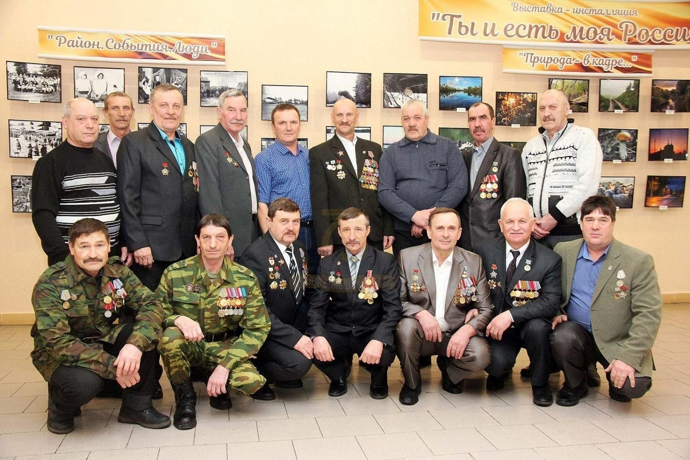
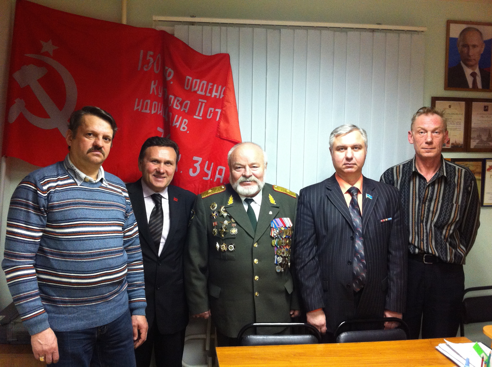
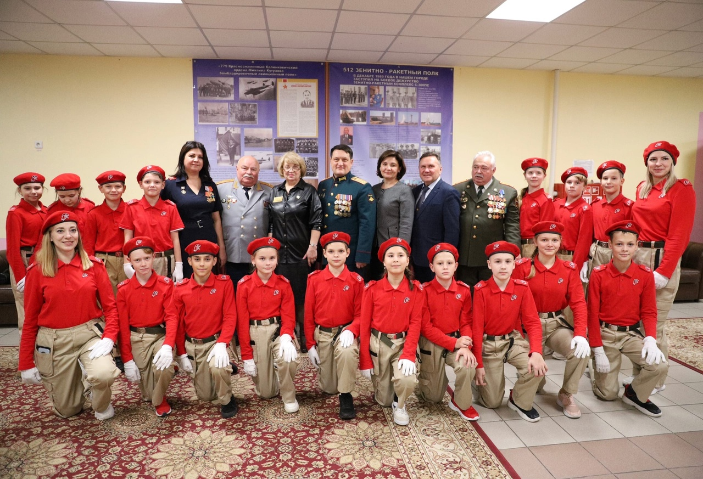

«Совет Ветеранов Боевых Действий» — это объединение героев, прошедших через войну в разное время и сохранивших верность долгу. Мы поддерживаем ветеранов, помогаем их семьям и воспитываем патриотизм у молодёжи.
Региональная общественная организация "Совет Ветеранов Боевых Действий
Структура СВБД
Городские советы
Городские советы структуры Региональной общественной организации (РОО) "Совет ветеранов боевых действий" представляют собой местные отделения, действующие на уровне городов и муниципальных образований. Они формируются из числа членов организации, проживающих в конкретном населенном пункте, и выполняют ряд функций связанных с организацией различных мероприятий, проведение встреч, собраний, памятных акций и торжественных мероприятий, посвященных героическому прошлому страны. Социальная поддержка и помощь ветеранам, и членам их семей. Патриотическое воспитание и участие в образовательных программах по изучению истории своей Родины среди молодого поколения.

Районные ячейки
Районные советы структуры РОО "Совет ветеранов боевых действий" организуют работу на местах, координируя деятельность местных отделений. Их основная задача — оказание адресной помощи ветеранам и членам их семей, обеспечение их необходимыми социальными услугами и поддержкой. Помимо этого, районные советы активно участвуют в проведении мероприятий, направленных на патриотическое воспитание молодёжи и сохранение исторической памяти.

Молодёжные клубы
Молодежные клубы структуры РОО "Совет ветеранов боевых действий" созданы для воспитания патриотизма и гражданской ответственности у молодых поколений. Клубы проводят мероприятия, направленные на изучение военной истории России, знакомство с боевым прошлым ветеранов и развитие лидерских качеств. Участники клубов получают возможность общаться с участниками боевых действий, участвовать в военно-патриотических акциях и проектах, способствующих укреплению единства нации.

Наша деятельность
Деятельность РОО "Совет ветеранов боевых действий" направлена на поддержку ветеранов, укрепление патриотического духа и социальную адаптацию участников боевых действий. Организация проводит мероприятия, посвященные историческим событиям, оказывает материальную и моральную помощь ветеранам, помогает решать юридические вопросы и медицинские проблемы. Важнейшей задачей Совета является воспитание молодежи в духе любви к Отечеству и уважение к подвигам предков.